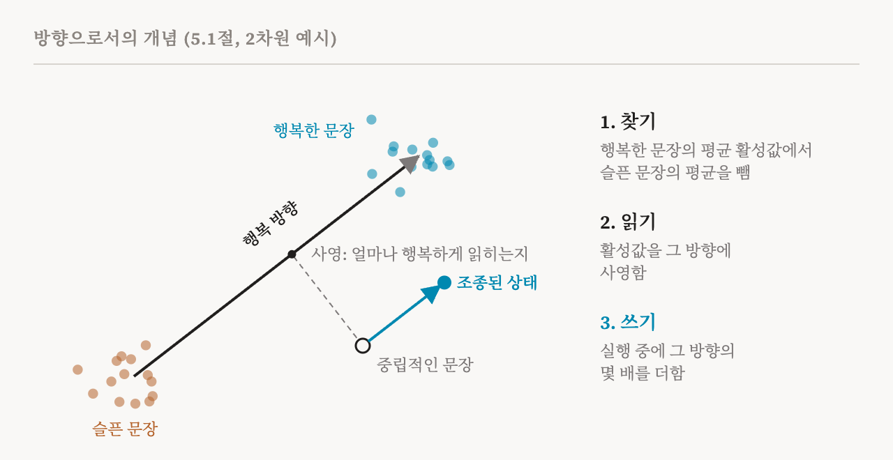
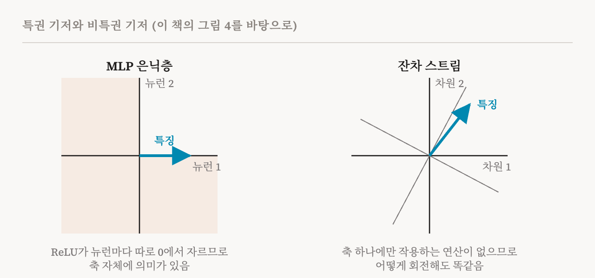

5편은 질문 하나로 끝났습니다. 모델을 읽는 단위로 뉴런 하나하나가 알맞지 않은 경우가 많다면, 무엇이 알맞을까요? 이 책의 5장은 신경망이 정보를 어떻게 표현하고 계산을 어떻게 수행하는지에 관한 가설 네 가지를 다룹니다. 어느 것도 증명되지는 않았지만, 각각이 이 분야가 어떤 방법을 만들고 어떤 실험을 할지에 영향을 주었습니다. 이번 편은 그 가운데 첫 번째이자 가장 영향력 있는 선형 표현 가설(linear representation hypothesis)을 다룹니다. 5.1절(27–28쪽)입니다.
가설
선형 표현 가설은 활성 공간의 곧은 방향이 개념을 표현하는 효과적인 기본 단위라고 말합니다. 이 책의 표현으로는, 개념은 활성 공간의 선형 방향인 특징으로 표현될 수 있습니다.
여기서 두 가지 결과가 따라 나오고, 이 가설이 그토록 쓸모 있는 이유도 이 둘에 있습니다. 첫째는 읽기에 관한 것입니다. 어떤 활성값에 개념이 얼마나 강하게 들어 있는지 재려면, 그 활성값을 개념의 방향 위에 사영(projection)합니다. 활성값이 그 방향으로 얼마나 멀리 뻗어 있는지 묻는 것입니다. 도시를 북동쪽으로 가로질러 걷는다고 해 봅시다. 그동안 북쪽으로 이동한 거리가, 걸어간 경로를 북쪽 방향에 사영한 값입니다. 마찬가지로 어떤 활성값을 '행복' 방향에 사영한 값은, 모델의 지금 상태가 얼마나 행복하게 읽히는지 말해 줍니다. 수학적으로는 곱하고 더하는 계산 한 번이며, 이 책은 이를 φᵀh(x)로 씁니다.
둘째는 쓰기에 관한 것입니다. 활성값에 그 방향을, 또는 그 방향의 몇 배를 더하면 모델의 행동이 그 개념 쪽으로 밀려야 하고, 빼면 멀어져야 합니다. 모델이 행복을 어떤 방향으로 담고 있다면, 계산 도중에 그 방향을 조금 더 보태면 모델이 써 내는 문장이 조금 더 행복해져야 합니다.

강한 버전과 약한 버전
이 책은 이 가설을 두 버전으로 나눕니다. 강한 버전은 모든 개념이 선형 특징으로 가장 잘 표현된다고 말합니다. 그렇다면 어느 순간의 모델 활성값이든, 특징 방향들에 지금 입력에서 각 특징이 켜진 정도를 곱해 더한 합으로 대략 쓸 수 있습니다. 활성값을 이해한다는 것은 방향의 목록을 찾아내고 그 세기를 읽어 내는 일이 됩니다. 약한 버전은 일부 개념만 선형으로 표현된다고 말합니다.
이 차이는 아주 중요합니다. 강한 버전이 맞다면, 방향들의 완전한 사전이 곧 모델이 표현하는 것에 대한 완전한 설명이 됩니다. 10편의 희소 오토인코더는 바로 그런 사전을 만들려는 시도입니다. 약한 버전만 맞다면, 선형 도구는 어떤 개념에는 통하고 어떤 개념은 놓칠 것입니다.
선형성이 분석을 다룰 만하게 만드는 이유
선형으로 표현된 특징은 고정된 방향에 대응하고, 그 방향에 사영해서 존재를 알아낼 수 있습니다. 기계적 분석이 다룰 만해지는 것은 이 덕분입니다. 특징을 찾고, 재고, 조작하는 데 간단한 방법으로 충분합니다. 예를 들어 특징의 크기를 키운 뒤 활성값에 다시 더할 수 있습니다.
이 책 바깥의 오래된 예가 감을 잡게 해 줍니다. 2013년 연구자들은 단어 임베딩에서 "king"의 벡터에서 "man"의 벡터를 빼고 "woman"의 벡터를 더하면 "queen"의 벡터 가까이에 닿는다는 것을 발견했습니다. 대략 성별에 해당하는 방향을 양처럼 더하고 뺄 수 있었던 것입니다. 이 절에 딸린 이 책의 실습 노트북은 오늘날의 모델로 비슷한 일을 합니다. 행복한 문장과 슬픈 문장에 대한 GPT-2의 활성값을 모으고, 두 평균의 차이를 '행복' 방향으로 삼습니다. 그다음 이 방향에 사영하면 새로운 행복한 문장과 슬픈 문장이 갈린다는 것을 보이고, 생성 도중에 이 방향을 더해 GPT-2가 쓰는 문장을 더 행복하게, 또는 더 슬프게 조종합니다.
모든 공간의 축이 의미 있지는 않다
이 책은 이어서, 특징이 뉴런과 나란히 놓이리라 기대할 수 있는 곳이 어디인지에 대해 미묘한 점을 짚습니다.
모델의 각 부분은 서로 다른 기하를 가진 활성 공간을 가집니다. MLP의 은닉층에서는 ReLU 같은 비선형 함수가 뉴런마다 따로 작용합니다. 그래서 뉴런 축이 구별됩니다. 각 뉴런이 따로따로 0에서 잘리므로, 어떤 숫자가 뉴런인지가 중요해집니다. 좌표계 자체에 의미가 있는 것이고, 이 책은 앞선 연구를 따라 이를 특권 기저(privileged basis)라고 부릅니다.
잔차 스트림 같은 다른 공간에서는 좌표 하나하나에 따로 작용하는 연산이 없습니다. 스트림에서 읽거나 스트림에 쓰는 모든 것이 행렬 곱셈을 거치는데, 행렬 곱셈은 모든 방향을 똑같이 다룹니다. 스트림의 좌표계를 회전하고 주변의 가중치를 그에 맞게 고치면, 모델은 정확히 같은 것을 계산합니다. 이런 공간의 기저를 비특권 기저(non-privileged basis)라고 하며, 특징이 그 축과 나란해야 할 이유가 없습니다. 특징은 어느 방향이든 향할 수 있습니다.

이 구별은 많은 것을 설명합니다. 기저가 특권적인 곳에서는 뉴런 하나가 개념 하나를 나타내는 특징 역할을 할 수 있습니다. 그렇지 않은 곳에서는 특징이 어떤 뉴런과도 맞아떨어지지 않는 방향이거나 다른 모양일 수 있고, 활성 공간에서 그것을 찾으려면 특별한 방법이 필요합니다. 뉴런이 어떤 때는 읽히고 어떤 때는 읽히지 않는 이유 가운데 하나이고, 연구자들이 잔차 스트림의 차원 하나하나를 들여다보는 대신 방향을 찾는 이유이기도 합니다.
가설을 뒷받침하는 증거
이 책은 약한 버전을 뒷받침하는 증거를 세 가지 듭니다. 3편의 단순한 분류기인 선형 프로브가 아주 다양한 모델에서 아주 다양한 개념을 읽어 냅니다. 방향 하나를 따라 활성값을 조종해서 표적으로 삼은 행동 변화를 만들 수 있습니다. 2024년의 한 연구는 활성값에 벡터 하나를 더하는 것만으로 모델을 조종했습니다. 그리고 희소 오토인코더는 선형으로 접근할 수 있고 조종에도 쓸 수 있는 특징들을 큰 규모로 찾아냅니다.
가설에 맞서는 증거
동시에 이 책은, 모든 표현이 곧은 방향으로 잘 설명되지는 않는다는 증거도 상당하다고 전합니다. 어떤 특징들은 비선형적으로 상호작용합니다. 모델 안의 어떤 알고리즘은 비선형 변환에 기댑니다. 어떤 특징들은 서로 상호작용하는 여러 부분 공간에 걸쳐 흩어져 있습니다.
인용된 연구 두 편이 이를 구체적으로 보여 줍니다. 어떤 수를 법으로 하는 덧셈을 학습한 작은 트랜스포머를 연구한 2023년 연구는, 모델이 수를 원 위의 위치로 표현하고 삼각함수 항등식을 써서 회전을 합치는 방식으로 더한다는 것을 발견했습니다. 그리고 「Not All Language Model Features Are One-Dimensionally Linear」라는 직설적인 제목의 2025년 연구는, 언어 모델이 요일과 달을 원 위에 놓인 점들로 표현한다는 것을 발견했습니다. 월요일 옆에 화요일이 있고, 일요일 다음에는 다시 월요일로 돌아오는 2차원의 모양입니다. 이 연구는 모델이 예를 들어 어떤 요일의 이틀 뒤가 무슨 요일인지 계산할 때 이 원을 쓴다는 증거도 찾았습니다. 곧은 방향 하나로는 이렇게 한 바퀴 돌아오는 구조를 담을 수 없습니다.
더 나아가는 연구자들도 있습니다. 2024년의 한 에세이는 특징이 모델 안에 명시적인 대상으로 항상 존재하는 것이 아니라, 회로의 동역학에서 생겨나는 것일 수도 있다고 주장합니다. 이 관점에서는 어떤 개념의 '방향'을 묻는 것이 때로는 잘못된 질문일 수 있습니다.
쓸모 있는 근사
이 책의 결론은 신중합니다. 선형 표현 가설은 보편 법칙이 아니라, 어떤 상황에서 성립하는 쓸모 있는 근사로 보는 것이 가장 좋다는 것입니다. 이 연재의 나머지를 읽는 동안에도 이렇게 받아들이는 것이 좋습니다. 프로브부터 희소 오토인코더, 조종 벡터까지 가장 성공한 도구 상당수가 선형성을 가정하며, 그 성공은 모델이 표현하는 것의 많은 부분이 충분히 선형적이라는 증거입니다. 그 도구들이 실패하는 곳은 선형적이지 않은 곳인 경우가 많습니다.
| 용어 | 뜻 |
|---|---|
| 선형 표현 가설 | 개념이 활성 공간의 곧은 방향으로 표현된다는 생각 |
| 사영 | 활성값이 어떤 방향으로 얼마나 뻗어 있는지. 선형 특징의 세기를 잼 |
| 강한 버전 | 모든 개념이 선형이므로, 활성값은 특징 방향들의 가중합이라는 주장 |
| 약한 버전 | 일부 개념만 선형으로 표현된다는 주장 |
| 평균 차이 | 개념이 있을 때의 평균 활성값에서 없을 때의 평균 활성값을 빼서 방향을 찾는 방법 |
| 조종 | 활성값에 어떤 방향의 몇 배를 더해 행동을 그 개념 쪽으로 미는 것 |
| 기저 | 공간의 좌표를 적을 때 쓰는 축들의 집합 |
| 특권 기저 | ReLU처럼 좌표마다 따로 작용하는 연산 때문에 특별해진 축 |
| 비특권 기저 | 어떤 연산도 구별하지 않아서, 어떻게 회전해도 똑같이 쓸 수 있는 축 |
| 다차원 특징 | 원 위에 놓인 요일처럼, 방향 하나로는 부족한 특징 |
참고 문헌에 링크한 이 책의 노트북에서 GPT-2로 행복과 슬픔 실험을 직접 해 볼 수 있습니다. 8편에서는 두 번째 가설을 다룹니다. 모델이 차원 수보다 훨씬 많은 특징을 담고 있다는 가설입니다.